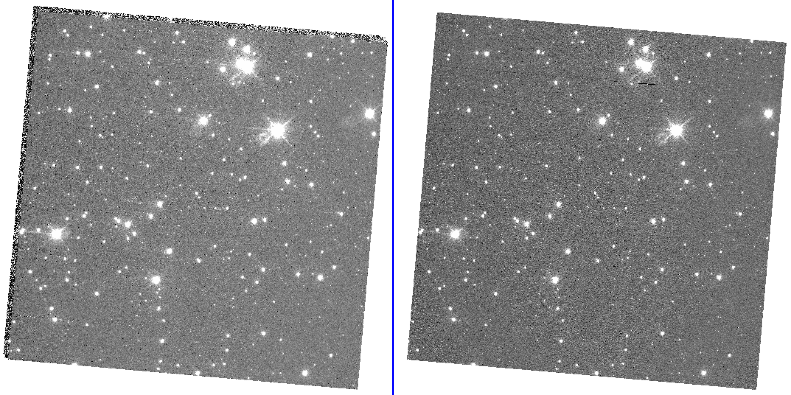
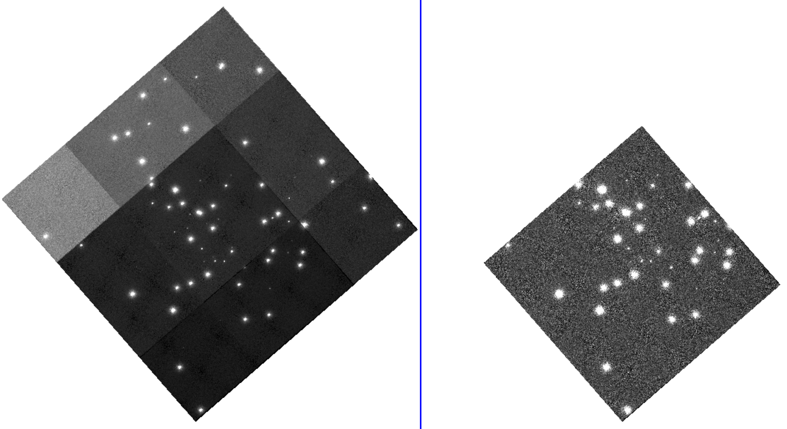

⚠️ EXECUTION WARNING
This notebook may not execute properly in the current environment.
Some cells may have failed during automated testing. Please review the notebook content and test manually before use.
Generated during CI/CD pipeline - some outputs may be incomplete or missing.

STIS DrizzlePac Tutorial#
Table of Contents#
1. Learning Goals#
By the end of this tutorial, you will:
Learn how to download STIS data from MAST using
astroquery.CTI correct STIS CCD data with the new pixel-based CTI code
stis_cti(see webpage for more details).Align images to sub-pixel accuracy for all three STIS detectors (CCD, NUV MAMA, FUV MAMA) using
tweakregfrom DrizzlePac.Combine images using
astrodrizzlefrom DrizzlePac.
2. Introduction#
The Space Telescope Imaging Spectrograph (STIS) instrument on board the Hubble Space Telescope (HST) has three detectors: a charge-coupled device (CCD) and two multi-anode microchannel array (MAMA) detectors for near- and far-ultraviolet wavelengths (NUV MAMA and FUV MAMA respectively). The CCD detector suffers from charge transfer inefficiency (CTI) which can be corrected for directly on the CCD images using a pixel-based algorithm (stis_cti; based on work by Anderson & Bedin 2010, see webpage).
In order to maximize the science capabilities of images taken with STIS, they can be accurately aligned and combined (or ‘drizzled’). The code used to do this is from the DrizzlePac package which has been extensively tested on Wide-Field Camera 3 (WFC3) and Advanced Camera for Surveys (ACS) data but was previously unsupported for STIS. This tutorial gives alignment and drizzling examples for STIS images of standard star fields taken for each of its three detectors. We refer users to the DrizzlePac Handbook (Gonzaga et al. 2015, Hoffmann et al. 2021) for more details on the drizzling process and DrizzlePac codes.
2.1 STIS Data Formats#
CCD data: For this example, only post-SM4 CCD data taken on primary science amplifier D are used. These are the best calibrated STIS CCD images, the default for science observations, and can be CTI corrected with the new pixel-based code stis_cti. For alignment and drizzling, we use STIS CCD images that have been fully calibrated (sx2.fits images: dark- and bias-subtracted, flat-fielded, sky-subtracted, summed individual cosmic-ray (CR) split images with CR-rejection and distortion corrections already applied) and have also been CTI corrected (s2c.fits images).
MAMA data: MAMA detectors do not require CTI corrections or CR-rejection, and STIS MAMA imaging is typically taken in single exposures (i.e., not CR split). For this example, we only use MAMA data with one science extension (i.e., three extensions total: SCI, ERR, DQ) as is typical for STIS MAMA data. If the MAMA data has more than one science extension (NEXTEND>3), the science extensions can be summed and saved as a new fits file with this as the first (and only) science extension. These should also be available as sfl.fits images from MAST where this is relevant. For alignment and drizzling, we use STIS MAMA images that have been fully calibrated (x2d.fits: dark- and bias-subtracted, flat-fielded, sky-subtracted, distortion corrections already applied).
Typically tweakreg and astrodrizzle require individual dark- and bias-subtracted, flat-fielded images (flt.fits), for WFC3 and ACS. For STIS data, a few workarounds are required to ensure these codes can run on the STIS data. Additionally, specific parameters are set to ensure that additional calibrations (e.g, sky subtraction, CR-rejection, distortion corrections) are not applied to the already calibrated STIS data.
See the STIS Instrument Handbook and STIS Data Handbook (specifically Section 2.2 on file types) for more information.
3. Imports#
os for operating system commands
sys to set system preferences
glob for getting file names
shutil for copying files
numpy to handle array functions
pandas for dataframe storage and manipulation
matplotlib.pyplot for plotting images
tempfile TemporaryDirectory for creating temporary storage directories while downloading and sorting data
astropy.io fits for working with FITS files
astropy.io ascii for working with ascii files
astropy.table Table for creating tidy tables
astropy.visualization ZScaleInterval for scaling images for display
crds for updating file headers and downloading reference files
stis_cti for CTI correcting STIS data
drizzlepac for alignment (tweakreg) and image drizzling (astrodrizzle)
astroquery for querying and downloading data from MAST
copy_files custom function (in directory) for creating directories, checking for data and copying files
# Load packages
import os
import sys
import glob
import shutil
import numpy as np
import pandas as pd
import matplotlib
import matplotlib.pyplot as plt
from tempfile import TemporaryDirectory
from astropy.io import fits
from astropy.io import ascii
from astropy.table import Table
from astropy.visualization import ZScaleInterval
# STScI packages
from drizzlepac import tweakreg
from drizzlepac import astrodrizzle as ad
from astroquery.mast import Observations
from crds import assign_bestrefs
# Custom package, copy_files.py should be in the same directory
import copy_files as cf
# STIS packages
from stis_cti import stis_cti, archive_dark_query
from stis_cti import __version__ as stis_cti_version
# Notebook settings
from IPython.core.interactiveshell import InteractiveShell
InteractiveShell.ast_node_interactivity = "all"
print(f'stis_cti v{stis_cti_version}')
The following tasks in the stistools package can be run with TEAL:
basic2d calstis ocrreject wavecal x1d x2d
stis_cti v1.6.2
# Set plotting defaults
matplotlib.rcParams['figure.figsize'] = [15, 5]
matplotlib.rcParams['image.origin'] = 'lower'
matplotlib.rcParams['image.aspect'] = 'equal'
matplotlib.rcParams['image.cmap'] = 'inferno'
matplotlib.rcParams['image.interpolation'] = 'none'
%matplotlib inline
# Setting pandas display options
pd.set_option('display.expand_frame_repr', False)
pd.set_option('display.max_rows', 3000)
pd.set_option('display.max_columns', 500)
pd.set_option('display.width', 1000)
# Set numpy array display options
np.set_printoptions(threshold=sys.maxsize)
4. Set & Make Directories#
Set root directory for project (root_dir), a reference file directory (ref_dir, explained in more detail below but set this path to any existing reference file directories if present), and a cache directory for temporary data storage for downloads (cache_dir). The remaining directories will be nested within the root directory and are created below.
def check_mkdir(new_dir):
"""Check for and make directory.
Function to check for a directory and make it if it doesn't exist.
Parameters
----------
new_dir : str
Path of directory to check for/make.
"""
# Check for directory
if os.path.exists(new_dir):
print('Directory exists: {}'.format(new_dir))
else:
# Make directory
os.makedirs(new_dir, 0o774)
print('Created directory: {}'.format(new_dir))
# Get the Notebook current working directory to handle relative paths
cwd = os.getcwd()
# Set temporary data download store
cache_dir = './data_cache' # Update this as needed
# Set the reference file directory
ref_dir = './reference_files' # Update this if another reference file directory exists
# Set root and data directories
root_dir = './drizpac' # Update this as needed
dat_dir = os.path.join(root_dir, 'data')
ccd_dir = os.path.join(dat_dir, 'ccd_data')
mama_dir = os.path.join(dat_dir, 'mama_data')
# Set directories for CTI correction of CCD data
cti_dir = os.path.join(dat_dir, 'ccd_cti')
science = os.path.join(cti_dir, 'science')
darks = os.path.join(cti_dir, 'darks')
ref_cti = os.path.join(cti_dir, 'ref')
# Set directories for alignment with tweakreg
ccd_twk = os.path.join(dat_dir, 'ccd_twk')
nuv_twk = os.path.join(dat_dir, 'nuv_twk')
fuv_twk = os.path.join(dat_dir, 'fuv_twk')
# Set directories for drizzling with astrodrizzle
ccd_drz = os.path.join(dat_dir, 'ccd_drz')
nuv_drz = os.path.join(dat_dir, 'nuv_drz')
fuv_drz = os.path.join(dat_dir, 'fuv_drz')
# Check for directories and make them if they don't exist
for d in [cache_dir, ref_dir, root_dir, dat_dir, ccd_dir, mama_dir, cti_dir, science, darks, ref_cti, ccd_twk, fuv_twk, nuv_twk, ccd_drz, fuv_drz, nuv_drz]:
check_mkdir(d)
Directory exists: ./data_cache
Directory exists: ./reference_files
Directory exists: ./drizpac
Directory exists: ./drizpac/data
Directory exists: ./drizpac/data/ccd_data
Directory exists: ./drizpac/data/mama_data
Directory exists: ./drizpac/data/ccd_cti
Directory exists: ./drizpac/data/ccd_cti/science
Directory exists: ./drizpac/data/ccd_cti/darks
Directory exists: ./drizpac/data/ccd_cti/ref
Directory exists: ./drizpac/data/ccd_twk
Directory exists: ./drizpac/data/fuv_twk
Directory exists: ./drizpac/data/nuv_twk
Directory exists: ./drizpac/data/ccd_drz
Directory exists: ./drizpac/data/fuv_drz
Directory exists: ./drizpac/data/nuv_drz
5. Setting Up Reference File Directory#
STScI codes (e.g., stis_cti, DrizzlePac) need to access reference files to ensure the HST data they run on are properly calibrated. A local store for the reference files is required and a systerm variable should be set for the codes to access those files. The directory variable for STIS data is called “oref” by convention.
We create the oref environment variable first and populate it with the necessary reference files later in the Notebook. If you already have the required STIS reference files in an existing oref directory, set the oref environment variable to that directory path.
We can assign a system variable in three different ways, depending on whether we are working from:
The command line
A Python/Jupyter environment
A Jupyter Notebook
Unix-style Command Line |
Python/Jupyter |
Jupyter Notebook |
|---|---|---|
export oref=’./reference_files/references/…’ |
os.environ[‘oref’] = ‘./reference_files/references/…’ |
%env oref ./reference_files/references/… |
Note that this system variable must be set again with every new instance of a terminal or Notebook or the export command can be added to your .bash_profile or equivalent file.
The Calibration Reference Data System (CRDS) both stores the reference files and determines the mapping of reference files to observations. The crds tool can find, update, and download the best reference files for a particular observation. The documentation for crds describes many of the more advanced options. In this Notebook we provide a demonstration on how to obtain updated reference file information stored in the FITS headers of observations and download those files to a local reference file directory.
First the following environment variables are needed:
CRDS_SERVER_URL: Location of the CRDS serverCRDS_PATH: Path to where reference files will be downloadedoref: Path that the reference files will be downloaded to withinCRDS_PATH
# Set environment variables
os.environ['CRDS_SERVER_URL'] = 'https://hst-crds.stsci.edu'
os.environ['CRDS_PATH'] = os.path.abspath(ref_dir)
os.environ['oref'] = os.path.join(os.path.abspath(ref_dir), 'references', 'hst', 'stis') + os.path.sep # Trailing slash important
# print('oref: {}'.format(os.environ['oref']))
6. Downloading Data#
The data used in this example are from STIS monitoring observations of two standard star fields: NGC 5139 for the CCD and NGC 6681 for the MAMAs. We use two programs for each field from 2010 and 2011. The data are taken at the same position angle (PA) with some dithering and in the following filters:
CCD: 50CCD
NUV MAMA: F25SRF2, F25QTZ, F25CN182
FUV MAMA: F25SRF2, F25QTZ, 25MAMA
The data are downloaded from MAST using astroquery, ~288 MB of data for the CCD and ~437 MB of data for the MAMAs.
# Set proposal IDs (PIDs)
ccd_pids = [11854, 12409]
mama_pids = [11856, 12413] # Both NUV & FUV MAMA observations taken in a single PID
# Check astroquery Observations options
Observations.get_metadata("observations")
Observations.get_metadata("products")
| Column Name | Column Label | Data Type | Units | Description | Examples/Valid Values |
|---|---|---|---|---|---|
| str21 | str25 | str7 | str10 | str72 | str116 |
| intentType | Observation Type | string | Whether observation is for science or calibration. | Valid values: science, calibration | |
| obs_collection | Mission | string | Collection | E.g. SWIFT, PS1, HST, IUE | |
| provenance_name | Provenance Name | string | Provenance name, or source of data | E.g. TASOC, CALSTIS, PS1 | |
| instrument_name | Instrument | string | Instrument Name | E.g. WFPC2/WFC, UVOT, STIS/CCD | |
| project | Project | string | Processing project | E.g. HST, HLA, EUVE, hlsp_legus | |
| filters | Filters | string | Instrument filters | F469N, NUV, FUV, LOW DISP, MIRROR | |
| wavelength_region | Waveband | string | Energy Band | EUV, XRAY, OPTICAL | |
| target_name | Target Name | string | Target Name | Ex. COMET-67P-CHURYUMOV-GER-UPDATE | |
| target_classification | Target Classification | string | Type of target | Ex. COMET;COMET BEING ORBITED BY THE ROSETTA SPACECRAFT;SOLAR SYSTEM | |
| ... | ... | ... | ... | ... | ... |
| s_region | s_region | string | ICRS Shape | STC/S Footprint | Will be ICRS circle or polygon. E.g. CIRCLE ICRS 17.71740689 -58.40043015 0.625 |
| jpegURL | jpegURL | string | Preview Image URL | https://archive.stsci.edu/hst/previews/N4QF/N4QF18090.jpg | |
| distance | Distance (") | float | arcsec | Angular separation between searched coordinates and center of obsevation | |
| obsid | Product Group ID | integer | Database identifier for obs_id | Long integer, e.g. 2007590987 | |
| dataRights | Data Rights | string | Data Rights | valid values: public,exclusive_access,restricted | |
| mtFlag | Moving Target | boolean | Moving Target Flag | If True, observation contains a moving target, if False or absent observation may or may not contain a moving target | |
| srcDen | Number of Catalog Objects | float | Number of cataloged objects found in observation | ||
| dataURL | Data URL | string | Data URL | ||
| proposal_type | Proposal Type | string | Type of telescope proposal | Eg. 3PI, GO, GO/DD, HLA, GII, AIS | |
| sequence_number | Sequence Number | integer | Sequence number, e.g. Kepler quarter or TESS sector |
| Column Name | Column Label | Data Type | Units | Description | Examples/Valid Values |
|---|---|---|---|---|---|
| str26 | str25 | str7 | str5 | str257 | str149 |
| obs_id | Observation ID | string | Observation identifier, given by mission | U24Z0101T, N4QF18030 | |
| obsID | Product Group ID | integer | Database identifier for obs_id | Long integer, e.g. 2007590987 | |
| obs_collection | Mission | string | Mission identifier | HST, HLA, SWIFT, GALEX, Kepler, K2... | |
| dataproduct_type | Product Type | string | Data product type | Valid values: IMAGE, SPECTRUM, SED, TIMESERIES, VISIBILITY, EVENTLIST, CUBE, CATALOG, ENGINEERING, NULL | |
| description | Description | string | File description | DADS ASN file - Association ACS/WFC3/STIS, Artifact Flag image (J2000) | |
| dataURI | URI | string | Data access URI or URL | mast:HST/product/obqu05070_flt.fits, http://galex.stsci.edu/data/GR6/pipe/01-vsn/06915-QSOGRP_05/d/01-main/0001-img/07-try/QSOGRP_05-fd-flags.fits.gz | |
| type | Type | string | Observation type | Valid values: "C" or "D" (derived from simple observations; e.g. associations and mosaics), "S" (simple observations) | |
| productGroupDescription | Product Group | string | Product group, primarily whether a product is a 'minimum recommended product' or not | Valid values: Reuse, Minimum Recommended Products, OTFR, Pointer to service | |
| productDocumentationURL | Product Documentation | string | Product documentation url | ||
| productSubGroupDescription | Product Subgroup | string | Product Subgroup | E.g. Q2F, RAMP, RAW, UNCAL, TRM | |
| proposal_id | Proposal ID | string | Proposal ID | ||
| parent_obsid | Parent Product Group ID | integer | Product group ID for the parent observation. For HST data this may be the association obsid. | ||
| size | File Size | integer | bytes | File size in bytes | |
| project | Project | string | Processing project | E.g. HST, HLA, EUVE, hlsp_legus | |
| productFilename | Filename | string | Product filename | obqu05070_flt.fits, QSOGRP_05-nd-flags.fits.gz | |
| productType | Product Category | string | Valid values: SCIENCE, CALIBRATION, BIAS, DARK, FLAT, WAVECAL, NOISE, WEIGHT, AUXILIARY, INFO, CATALOG, LIGHTCURVE, TARGETPIXELS, PREVIEW, PREVIEW_FULL, PREVIEW_1D, PREVIEW_2D, THUMBNAIL, PREVIEW_THUMB, MINIMUM_SET, RECOMMENDED_SET, COMPLETE_SET, WEBSERVICE | ||
| prvversion | Calibration Version | ||||
| calib_level | Calibration Level | integer | Product Calibration Level | 0 = raw, 1 = uncalibrated, 2 = calibrated, 3 = science product, 4 = contributed science product | |
| filters | Astronomical filters used | ||||
| dataRights | Data access rights |
def get_oids(pids):
"""Get observation IDs from proposal IDs.
From a list of input proposal IDs (``pids``) get a list of observation IDs
(``oids``) using astroquery.
Parameters
----------
pids : list or array_like of str or int
List or array of proposal IDs to find observation IDs for
Returns
-------
oids : list of str
List of observation IDs within the input proposal IDs
"""
oids = []
# For each PID get obs IDs
for pid in pids:
obs = Observations.query_criteria(proposal_id='{}'.format(pid))
products = Observations.get_product_list(obs)
oids += list(np.unique(products['obs_id']))
print('{} observation IDs found for {} proposal IDs'.format(len(oids), len(pids)))
return oids
# Get the obs_id values from the PIDs
ccd_oids = get_oids(ccd_pids)
mama_oids = get_oids(mama_pids)
18 observation IDs found for 2 proposal IDs
36 observation IDs found for 2 proposal IDs
def download_data(ids, destination, product_types=None, cache_dir=cache_dir):
'''Downloads MAST data products into a flattened location.
Downloads data products (``product_type``) from input observation IDs (``ids``)
from MAST and copies them to a single directory (``destination``) from the
temporary download directory (``cache_dir``). Similar to stisteam.getdata().
Written by Sean Lockwood.
Parameters
----------
ids : list of str
List of observation IDs to download data products from
destination : str
Full path to final destination directory for data
product_types : list of str, optional
Names of product types to download for each observation ID (default is None,
means all data products will be downloaded)
cache_dir : str, optional
Full path to temporary data download storage directory (default
``cache_dir`` as defined above)
'''
assert os.path.isdir(destination), 'Destination must be a directory'
print('\nDownloading & copying data to {}\n'.format(destination))
# Get data products for each observation ID
obs = Observations.query_criteria(obs_id=ids)
products = Observations.get_product_list(obs)
if product_types is not None:
products = products[[x.upper() in product_types for x in products['productSubGroupDescription']]]
# Download data and combine into the destination directory
with TemporaryDirectory(prefix='downloads', dir=cache_dir) as d:
dl = Observations.download_products(products, mrp_only=False, download_dir=d)
for filename in dl['Local Path']:
shutil.copy(filename, destination)
%%capture --no-stderr output
# Download and combine CCD data (~288 MB)
download_data(ccd_oids, ccd_dir, product_types={'RAW', 'EPC', 'SPT', 'ASN', 'SX2'})
# Download and combine MAMA data (~437 MB)
download_data(mama_oids, mama_dir, product_types={'X2D'})
7. Download Reference Files#
The reference files for the STIS images are then updated in the image headers and downloaded (~250 MB). The crds.bestrefs tool is also accessible from the command line interface.
# Find and update the headers with the best reference files and download them
def download_ref_files(image_list):
print('Downloading reference files for:\n{}\n'.format(image_list))
errors = assign_bestrefs(image_list, sync_references=True, verbosity=-1)
if errors > 0:
raise ValueError('Unexpected error(s) running CRDS assign_bestrefs script.')
# Check in the Notebook directory
os.chdir(cwd)
# Get a list of images for the CCD and download reference files
ccd_list = glob.glob(os.path.join(ccd_dir, '*_raw.fits'))
download_ref_files(ccd_list)
# Get a list of images for the MAMAs and download reference files
mama_list = glob.glob(os.path.join(mama_dir, '*_x2d.fits'))
download_ref_files(mama_list)
Downloading reference files for:
['./drizpac/data/ccd_data/obmj01080_raw.fits', './drizpac/data/ccd_data/obat01050_raw.fits', './drizpac/data/ccd_data/obmj01090_raw.fits', './drizpac/data/ccd_data/obmj01030_raw.fits', './drizpac/data/ccd_data/obmj01040_raw.fits', './drizpac/data/ccd_data/obmj01010_raw.fits', './drizpac/data/ccd_data/obmj01060_raw.fits', './drizpac/data/ccd_data/obmj01050_raw.fits', './drizpac/data/ccd_data/obat01030_raw.fits', './drizpac/data/ccd_data/obmj01020_raw.fits', './drizpac/data/ccd_data/obmj01070_raw.fits', './drizpac/data/ccd_data/obat01010_raw.fits', './drizpac/data/ccd_data/obat01060_raw.fits', './drizpac/data/ccd_data/obat01090_raw.fits', './drizpac/data/ccd_data/obat01020_raw.fits', './drizpac/data/ccd_data/obat01040_raw.fits', './drizpac/data/ccd_data/obat01070_raw.fits', './drizpac/data/ccd_data/obat01080_raw.fits']
Downloading reference files for:
['./drizpac/data/mama_data/obav01vmq_x2d.fits', './drizpac/data/mama_data/obmi01xuq_x2d.fits', './drizpac/data/mama_data/obav01vgq_x2d.fits', './drizpac/data/mama_data/obmi01xqq_x2d.fits', './drizpac/data/mama_data/obav01w4q_x2d.fits', './drizpac/data/mama_data/obmi01y0q_x2d.fits', './drizpac/data/mama_data/obav01vcq_x2d.fits', './drizpac/data/mama_data/obav01wwq_x2d.fits', './drizpac/data/mama_data/obav01waq_x2d.fits', './drizpac/data/mama_data/obav01w6q_x2d.fits', './drizpac/data/mama_data/obmi01xsq_x2d.fits', './drizpac/data/mama_data/obav01veq_x2d.fits', './drizpac/data/mama_data/obmi01y6q_x2d.fits', './drizpac/data/mama_data/obmi01ymq_x2d.fits', './drizpac/data/mama_data/obmi01xwq_x2d.fits', './drizpac/data/mama_data/obmi01xmq_x2d.fits', './drizpac/data/mama_data/obav01w8q_x2d.fits', './drizpac/data/mama_data/obav01wzq_x2d.fits', './drizpac/data/mama_data/obav01v9q_x2d.fits', './drizpac/data/mama_data/obmi01xoq_x2d.fits', './drizpac/data/mama_data/obmi01ygq_x2d.fits', './drizpac/data/mama_data/obav01vaq_x2d.fits', './drizpac/data/mama_data/obav01wdq_x2d.fits', './drizpac/data/mama_data/obmi01yaq_x2d.fits', './drizpac/data/mama_data/obmi01ykq_x2d.fits', './drizpac/data/mama_data/obmi01yeq_x2d.fits', './drizpac/data/mama_data/obav01wpq_x2d.fits', './drizpac/data/mama_data/obav01wtq_x2d.fits', './drizpac/data/mama_data/obav01viq_x2d.fits', './drizpac/data/mama_data/obmi01y2q_x2d.fits', './drizpac/data/mama_data/obmi01y4q_x2d.fits', './drizpac/data/mama_data/obmi01yiq_x2d.fits', './drizpac/data/mama_data/obmi01y8q_x2d.fits', './drizpac/data/mama_data/obav01vkq_x2d.fits', './drizpac/data/mama_data/obav01w1q_x2d.fits', './drizpac/data/mama_data/obmi01xlq_x2d.fits']
8. CTI Correct CCD Images#
A pixel-based CTI correction is applied to the STIS CCD data with stis_cti. At present, this code can only be run on post-Servicing Mission 4 (SM4 in 2009) CCD data taken on the default science amplifier D. For all other CCD data, the previous empirical method (stistools.ctestis) can be used.
First, the necessary files are copied over to the CTI correction directory. Next, the darks needed to correct the data are determined and downloaded (about ~1.2 GB of data). Then the stis_cti code is run (see this webpage for a full description of the parameters). The num_processes parameter is the maximum number of parallel processes to use when running stis_cti, adjust this as needed for your machine.
%%capture --no-stderr
# Set file extensions for CCD image data to copy
exts = ['*_raw.fits', '*_epc.fits', '*_spt.fits', '*_asn.fits']
# Copy over all CCD files for each extension to the CTI correction directory
os.chdir(cwd)
for ext in exts:
cf.copy_files_check(ccd_dir, science, files='{}'.format(ext))
%%capture --no-stderr
# Determine dark exposures required for CCD data and download them (~1.2 GB)
needed_darks = archive_dark_query(glob.glob(os.path.join(science, '*_raw.fits')))
dark_exposures = set()
for anneal in needed_darks:
for dark in anneal['darks']:
dark_exposures.add(dark['exposure'])
download_data(dark_exposures, darks, product_types={'FLT', 'EPC', 'SPT'})
%%capture
# Run the CTI code on the CCD data
stis_cti(
science_dir=os.path.abspath(science),
dark_dir=os.path.abspath(darks),
ref_dir=os.path.abspath(ref_cti),
num_processes=15,
clean=True,
verbose=2)
Run checks on and inspect the CCD CTI corrected images.
# Print information for each file, check those that have been CTI corrected
os.chdir(cwd)
files = glob.glob(os.path.join(os.path.abspath(science), '*raw.fits'))
files.sort()
psm4 = 0
ampd = 0
ampo = 0
for f in files:
# Open file header
hdr = fits.getheader(f, 0)
# Get year obs
yr = int(hdr['TDATEOBS'].split('-')[0])
# Get file info
if yr <= 2004:
print('\n...PRE-SM4 ({}), NOT CTE CORRECTED...'.format(yr))
psm4 += 1
elif os.path.exists(f.replace('raw.fits', 'cte.fits')):
print('\n***CTE CORRECTED, AMP {} ({})***'.format(hdr['CCDAMP'], yr))
ampd += 1
else:
ampo += 1
print('\n~NON-CTE CORRECTED, AMP {} ({})~'.format(hdr['CCDAMP'], yr))
print('FILE: {}, PID: {}, ROOT: {}'.format(os.path.basename(f), hdr['PROPOSID'], hdr['ROOTNAME']))
print('INST: {}, DETECTOR: {}, AP: {}'.format(hdr['INSTRUME'], hdr['DETECTOR'], hdr['APERTURE']))
print('DATE OBS:{}, PROCESSED: {}'.format(hdr['TDATEOBS'], hdr['DATE']))
***CTE CORRECTED, AMP D (2010)***
FILE: obat01010_raw.fits, PID: 11854, ROOT: obat01010
INST: STIS, DETECTOR: CCD, AP: 50CCD
DATE OBS:2010-01-30, PROCESSED: 2025-07-25
***CTE CORRECTED, AMP D (2010)***
FILE: obat01020_raw.fits, PID: 11854, ROOT: obat01020
INST: STIS, DETECTOR: CCD, AP: 50CCD
DATE OBS:2010-01-30, PROCESSED: 2025-07-25
***CTE CORRECTED, AMP D (2010)***
FILE: obat01030_raw.fits, PID: 11854, ROOT: obat01030
INST: STIS, DETECTOR: CCD, AP: 50CCD
DATE OBS:2010-01-30, PROCESSED: 2025-07-25
***CTE CORRECTED, AMP D (2010)***
FILE: obat01040_raw.fits, PID: 11854, ROOT: obat01040
INST: STIS, DETECTOR: CCD, AP: 50CCD
DATE OBS:2010-01-30, PROCESSED: 2025-07-25
***CTE CORRECTED, AMP D (2010)***
FILE: obat01050_raw.fits, PID: 11854, ROOT: obat01050
INST: STIS, DETECTOR: CCD, AP: 50CCD
DATE OBS:2010-01-30, PROCESSED: 2025-07-25
~NON-CTE CORRECTED, AMP C (2010)~
FILE: obat01060_raw.fits, PID: 11854, ROOT: obat01060
INST: STIS, DETECTOR: CCD, AP: 50CCD
DATE OBS:2010-01-30, PROCESSED: 2025-07-25
~NON-CTE CORRECTED, AMP C (2010)~
FILE: obat01070_raw.fits, PID: 11854, ROOT: obat01070
INST: STIS, DETECTOR: CCD, AP: 50CCD
DATE OBS:2010-01-30, PROCESSED: 2025-07-25
~NON-CTE CORRECTED, AMP A (2010)~
FILE: obat01080_raw.fits, PID: 11854, ROOT: obat01080
INST: STIS, DETECTOR: CCD, AP: 50CCD
DATE OBS:2010-01-30, PROCESSED: 2025-07-25
~NON-CTE CORRECTED, AMP A (2010)~
FILE: obat01090_raw.fits, PID: 11854, ROOT: obat01090
INST: STIS, DETECTOR: CCD, AP: 50CCD
DATE OBS:2010-01-30, PROCESSED: 2025-07-25
***CTE CORRECTED, AMP D (2011)***
FILE: obmj01010_raw.fits, PID: 12409, ROOT: obmj01010
INST: STIS, DETECTOR: CCD, AP: 50CCD
DATE OBS:2011-02-05, PROCESSED: 2025-07-25
***CTE CORRECTED, AMP D (2011)***
FILE: obmj01020_raw.fits, PID: 12409, ROOT: obmj01020
INST: STIS, DETECTOR: CCD, AP: 50CCD
DATE OBS:2011-02-05, PROCESSED: 2025-07-25
***CTE CORRECTED, AMP D (2011)***
FILE: obmj01030_raw.fits, PID: 12409, ROOT: obmj01030
INST: STIS, DETECTOR: CCD, AP: 50CCD
DATE OBS:2011-02-05, PROCESSED: 2025-07-25
***CTE CORRECTED, AMP D (2011)***
FILE: obmj01040_raw.fits, PID: 12409, ROOT: obmj01040
INST: STIS, DETECTOR: CCD, AP: 50CCD
DATE OBS:2011-02-05, PROCESSED: 2025-07-25
***CTE CORRECTED, AMP D (2011)***
FILE: obmj01050_raw.fits, PID: 12409, ROOT: obmj01050
INST: STIS, DETECTOR: CCD, AP: 50CCD
DATE OBS:2011-02-05, PROCESSED: 2025-07-25
~NON-CTE CORRECTED, AMP C (2011)~
FILE: obmj01060_raw.fits, PID: 12409, ROOT: obmj01060
INST: STIS, DETECTOR: CCD, AP: 50CCD
DATE OBS:2011-02-05, PROCESSED: 2025-07-25
~NON-CTE CORRECTED, AMP C (2011)~
FILE: obmj01070_raw.fits, PID: 12409, ROOT: obmj01070
INST: STIS, DETECTOR: CCD, AP: 50CCD
DATE OBS:2011-02-05, PROCESSED: 2025-07-25
~NON-CTE CORRECTED, AMP A (2011)~
FILE: obmj01080_raw.fits, PID: 12409, ROOT: obmj01080
INST: STIS, DETECTOR: CCD, AP: 50CCD
DATE OBS:2011-02-05, PROCESSED: 2025-07-25
~NON-CTE CORRECTED, AMP A (2011)~
FILE: obmj01090_raw.fits, PID: 12409, ROOT: obmj01090
INST: STIS, DETECTOR: CCD, AP: 50CCD
DATE OBS:2011-02-05, PROCESSED: 2025-07-25
# Run checks on data
nraw = len(glob.glob(os.path.join(science, '*raw.fits')))
ncte = len(glob.glob(os.path.join(science, '*cte.fits')))
print('{} raw CCD files, {} CTE corrected files'.format(nraw, ncte)) # Should be equal if all data taken on amp D and post-SM4
print('{} pre-SM4, {} amp D (CTE corr), {} other amp (non-CTE)'.format(psm4, ampd, ampo))
18 raw CCD files, 10 CTE corrected files
0 pre-SM4, 10 amp D (CTE corr), 8 other amp (non-CTE)
# Display example CCD images
sci_root = 'obat01050'
sx2_file = os.path.join(ccd_dir, '{}_sx2.fits'.format(sci_root)) # CR rejected, distortion corrected
s2c_file = os.path.join(science, '{}_s2c.fits'.format(sci_root)) # CR rejected, distortion corrected, CTI corrected
ccd_files = [sx2_file]
cti_files = [s2c_file]
for ccdf, ctif in zip(ccd_files, cti_files):
# Plot whole image
fig, axes = plt.subplots(1, 2)
_ = fig.set_size_inches(15, 7)
vmin, vmax = -10, 10
for filename, ax in zip([ccdf, ctif], axes):
_ = ax.imshow(fits.getdata(filename, ext=1), vmin=vmin, vmax=vmax)
_ = ax.set_title(os.path.basename(filename))
plt.show()
# Zoom in near the bottom center
fig, axes = plt.subplots(1, 2)
_ = fig.set_size_inches(15, 7)
vmin, vmax = -10, 10
for filename, ax in zip([ccdf, ctif], axes):
_ = ax.imshow(fits.getdata(filename, ext=1), vmin=vmin, vmax=vmax)
_ = ax.set_title('{} zoom'.format(os.path.basename(filename)))
_ = ax.set_xlim(300, 800)
_ = ax.set_ylim(0, 300)
plt.show()
9. File Information#
Information is pulled from file headers and combined into a dataframe. The information is used for file sorting and determining appropriate alignment and drizzle parameters. We select only CCD data taken with primary science amplifier D and MAMA data with only one science extension for this example (see the Introduction - STIS Data Formats section for more details).
# Make dataframe of image properties
os.chdir(cwd)
det_dirs = [science, mama_dir]
exts = ['*_s2c.fits', '*_x2d.fits']
# Set variable arrays
fnames = []
det_names = []
rnames = []
pids = []
yrs = []
tdats = []
dats = []
dets = []
aps = []
nexs = []
texps = []
amps = []
gains = []
pas = []
ras = []
decs = []
pt1s = []
pt2s = []
# Loop over folders and file extensions
for det_dir, ext in zip(det_dirs, exts):
# Get list of file names
files = glob.glob(os.path.join(det_dir, ext))
files.sort()
# Loop over each file
for f in files:
# Open file header
hdr = fits.getheader(f, 0) + fits.getheader(f, 1)
# Get image properties
fname = os.path.basename(f)
rname = hdr['ROOTNAME'].strip()
pid = hdr['PROPOSID']
yr = int(hdr['TDATEOBS'].split('-')[0])
tdat = hdr['TDATEOBS'].strip()
dat = hdr['DATE'].strip().split('T')[0]
det = hdr['DETECTOR'].strip()
nex = hdr['NEXTEND']
texp = hdr['TEXPTIME']
ap = hdr['APERTURE'].strip()
pa = hdr['PA_APER']
ra = hdr['RA_TARG']
dec = hdr['DEC_TARG']
pt1 = hdr['POSTARG1']
pt2 = hdr['POSTARG2']
# For CCD data, store different header information
if 'CCD' in det:
amp = hdr['CCDAMP'].strip()
gain = hdr['CCDGAIN']
# For CCD data, only using amp D data (i.e., the only data that is CTI corrected)
if 'D' in amp:
if ext == '*_s2c.fits':
det_name = 'ccd_cti'
else:
det_name = 'ccd'
else:
# Name excluded CCD files
if ext == '*_s2c.fits':
det_name = 'xccd_cti'
else:
det_name = 'xccd'
# Store detector name for MAMAs
elif 'MAMA' in det:
# Take only single SCI exposure MAMA files (i.e. 3 extensions, SCI, ERR, DQ)
if nex == 3:
if 'FUV-MAMA' in det:
det_name = 'fuv_mama'
elif 'NUV-MAMA' in det:
det_name = 'nuv_mama'
else:
if 'FUV-MAMA' in det:
det_name = 'xfuv_mama'
elif 'NUV-MAMA' in det:
det_name = 'xnuv_mama'
# MAMAs do not have amp or gain info
amp = '-'
gain = '-'
# Save file info
fnames.append(fname)
det_names.append(det_name)
rnames.append(rname)
pids.append(pid)
yrs.append(yr)
tdats.append(tdat)
dats.append(dat)
dets.append(det)
aps.append(ap)
nexs.append(nex)
texps.append(texp)
amps.append(amp)
gains.append(gain)
pas.append(pa)
ras.append(ra)
decs.append(dec)
pt1s.append(pt1)
pt2s.append(pt2)
# Create data frame of image properties
df = pd.DataFrame({})
df['file'] = fnames
df['type'] = det_names
df['rootname'] = rnames
df['pid'] = pids
df['year_obs'] = yrs
df['date_obs'] = tdats
df['date_proc'] = dats
df['detector'] = dets
df['aperture'] = aps
df['nextend'] = nexs
df['texptime'] = texps
df['amp'] = amps
df['gain'] = gains
df['pa_aper'] = pas
df['ra'] = ras
df['dec'] = decs
df['postarg1'] = pt1s
df['postarg2'] = pt2s
df = df.sort_values(by=["type", "date_obs"]).reset_index(drop=True)
df
| file | type | rootname | pid | year_obs | date_obs | date_proc | detector | aperture | nextend | texptime | amp | gain | pa_aper | ra | dec | postarg1 | postarg2 | |
|---|---|---|---|---|---|---|---|---|---|---|---|---|---|---|---|---|---|---|
| 0 | obat01010_s2c.fits | ccd_cti | obat01010 | 11854 | 2010 | 2010-01-30 | 2025-12-02 | CCD | 50CCD | 3 | 10.0 | D | 4 | -94.980622 | 201.404333 | -47.593972 | 0.000000 | 0.000000 |
| 1 | obat01020_s2c.fits | ccd_cti | obat01020 | 11854 | 2010 | 2010-01-30 | 2025-12-02 | CCD | 50CCD | 3 | 10.0 | D | 4 | -94.980622 | 201.404333 | -47.593972 | 0.506985 | 0.253879 |
| 2 | obat01030_s2c.fits | ccd_cti | obat01030 | 11854 | 2010 | 2010-01-30 | 2025-12-02 | CCD | 50CCD | 3 | 10.0 | D | 4 | -94.980813 | 201.404333 | -47.593972 | 0.760246 | 0.761174 |
| 3 | obat01040_s2c.fits | ccd_cti | obat01040 | 11854 | 2010 | 2010-01-30 | 2025-12-02 | CCD | 50CCD | 3 | 10.0 | D | 4 | -94.980706 | 201.404333 | -47.593972 | 0.253261 | 0.507295 |
| 4 | obat01050_s2c.fits | ccd_cti | obat01050 | 11854 | 2010 | 2010-01-30 | 2025-12-02 | CCD | 50CCD | 3 | 60.0 | D | 4 | -94.980622 | 201.404333 | -47.593972 | 0.000000 | 0.000000 |
| 5 | obmj01010_s2c.fits | ccd_cti | obmj01010 | 12409 | 2011 | 2011-02-05 | 2025-12-02 | CCD | 50CCD | 3 | 10.0 | D | 4 | -94.980622 | 201.404333 | -47.593972 | 0.000000 | 0.000000 |
| 6 | obmj01020_s2c.fits | ccd_cti | obmj01020 | 12409 | 2011 | 2011-02-05 | 2025-12-02 | CCD | 50CCD | 3 | 10.0 | D | 4 | -94.980622 | 201.404333 | -47.593972 | 0.506985 | 0.253879 |
| 7 | obmj01030_s2c.fits | ccd_cti | obmj01030 | 12409 | 2011 | 2011-02-05 | 2025-12-02 | CCD | 50CCD | 3 | 10.0 | D | 4 | -94.980813 | 201.404333 | -47.593972 | 0.760246 | 0.761174 |
| 8 | obmj01040_s2c.fits | ccd_cti | obmj01040 | 12409 | 2011 | 2011-02-05 | 2025-12-02 | CCD | 50CCD | 3 | 10.0 | D | 4 | -94.980706 | 201.404333 | -47.593972 | 0.253261 | 0.507295 |
| 9 | obmj01050_s2c.fits | ccd_cti | obmj01050 | 12409 | 2011 | 2011-02-05 | 2025-12-02 | CCD | 50CCD | 3 | 60.0 | D | 4 | -94.980622 | 201.404333 | -47.593972 | 0.000000 | 0.000000 |
| 10 | obav01w4q_x2d.fits | fuv_mama | obav01w4q | 11856 | 2010 | 2010-05-07 | 2025-07-25 | FUV-MAMA | 25MAMA | 3 | 400.0 | - | - | -138.947169 | 280.803375 | -32.292667 | 0.000000 | 0.000000 |
| 11 | obav01w6q_x2d.fits | fuv_mama | obav01w6q | 11856 | 2010 | 2010-05-07 | 2025-07-25 | FUV-MAMA | 25MAMA | 3 | 400.0 | - | - | -138.945842 | 280.803375 | -32.292667 | 10.000000 | 0.000000 |
| 12 | obav01w8q_x2d.fits | fuv_mama | obav01w8q | 11856 | 2010 | 2010-05-07 | 2025-07-25 | FUV-MAMA | 25MAMA | 3 | 400.0 | - | - | -138.946986 | 280.803375 | -32.292667 | 10.000000 | 10.000000 |
| 13 | obav01waq_x2d.fits | fuv_mama | obav01waq | 11856 | 2010 | 2010-05-07 | 2025-07-25 | FUV-MAMA | 25MAMA | 3 | 400.0 | - | - | -138.948314 | 280.803375 | -32.292667 | 0.000000 | 10.000000 |
| 14 | obav01wdq_x2d.fits | fuv_mama | obav01wdq | 11856 | 2010 | 2010-05-07 | 2025-07-25 | FUV-MAMA | F25QTZ | 3 | 400.0 | - | - | -138.947769 | 280.803375 | -32.292667 | 0.000000 | 0.000000 |
| 15 | obav01wpq_x2d.fits | fuv_mama | obav01wpq | 11856 | 2010 | 2010-05-07 | 2025-07-25 | FUV-MAMA | F25SRF2 | 3 | 400.0 | - | - | -138.947969 | 280.803375 | -32.292667 | 0.000000 | 0.000000 |
| 16 | obav01wtq_x2d.fits | fuv_mama | obav01wtq | 11856 | 2010 | 2010-05-07 | 2025-07-25 | FUV-MAMA | 25MAMA | 3 | 400.0 | - | - | -138.947169 | 280.803375 | -32.292667 | 0.000000 | 0.000000 |
| 17 | obav01wwq_x2d.fits | fuv_mama | obav01wwq | 11856 | 2010 | 2010-05-07 | 2025-07-25 | FUV-MAMA | F25QTZ | 3 | 400.0 | - | - | -138.947769 | 280.803375 | -32.292667 | 0.000000 | 0.000000 |
| 18 | obav01wzq_x2d.fits | fuv_mama | obav01wzq | 11856 | 2010 | 2010-05-07 | 2025-07-25 | FUV-MAMA | F25SRF2 | 3 | 400.0 | - | - | -138.947969 | 280.803375 | -32.292667 | 0.000000 | 0.000000 |
| 19 | obmi01y4q_x2d.fits | fuv_mama | obmi01y4q | 12413 | 2011 | 2011-04-16 | 2025-07-25 | FUV-MAMA | 25MAMA | 3 | 400.0 | - | - | -138.947169 | 280.803375 | -32.292667 | 0.000000 | 0.000000 |
| 20 | obmi01y6q_x2d.fits | fuv_mama | obmi01y6q | 12413 | 2011 | 2011-04-16 | 2025-07-25 | FUV-MAMA | 25MAMA | 3 | 400.0 | - | - | -138.945842 | 280.803375 | -32.292667 | 10.000000 | 0.000000 |
| 21 | obmi01y8q_x2d.fits | fuv_mama | obmi01y8q | 12413 | 2011 | 2011-04-16 | 2025-07-25 | FUV-MAMA | 25MAMA | 3 | 400.0 | - | - | -138.946986 | 280.803375 | -32.292667 | 10.000000 | 10.000000 |
| 22 | obmi01yaq_x2d.fits | fuv_mama | obmi01yaq | 12413 | 2011 | 2011-04-16 | 2025-07-25 | FUV-MAMA | 25MAMA | 3 | 400.0 | - | - | -138.948314 | 280.803375 | -32.292667 | 0.000000 | 10.000000 |
| 23 | obmi01yeq_x2d.fits | fuv_mama | obmi01yeq | 12413 | 2011 | 2011-04-16 | 2025-07-25 | FUV-MAMA | F25QTZ | 3 | 400.0 | - | - | -138.947769 | 280.803375 | -32.292667 | 0.000000 | 0.000000 |
| 24 | obmi01ygq_x2d.fits | fuv_mama | obmi01ygq | 12413 | 2011 | 2011-04-16 | 2025-07-25 | FUV-MAMA | F25SRF2 | 3 | 400.0 | - | - | -138.947969 | 280.803375 | -32.292667 | 0.000000 | 0.000000 |
| 25 | obmi01yiq_x2d.fits | fuv_mama | obmi01yiq | 12413 | 2011 | 2011-04-16 | 2025-07-25 | FUV-MAMA | 25MAMA | 3 | 400.0 | - | - | -138.947169 | 280.803375 | -32.292667 | 0.000000 | 0.000000 |
| 26 | obmi01ykq_x2d.fits | fuv_mama | obmi01ykq | 12413 | 2011 | 2011-04-16 | 2025-07-25 | FUV-MAMA | F25QTZ | 3 | 400.0 | - | - | -138.947769 | 280.803375 | -32.292667 | 0.000000 | 0.000000 |
| 27 | obmi01ymq_x2d.fits | fuv_mama | obmi01ymq | 12413 | 2011 | 2011-04-16 | 2025-07-25 | FUV-MAMA | F25SRF2 | 3 | 400.0 | - | - | -138.947969 | 280.803375 | -32.292667 | 0.000000 | 0.000000 |
| 28 | obav01v9q_x2d.fits | nuv_mama | obav01v9q | 11856 | 2010 | 2010-05-06 | 2025-07-25 | NUV-MAMA | F25SRF2 | 3 | 300.0 | - | - | -138.947969 | 280.803375 | -32.292667 | 0.000000 | 0.000000 |
| 29 | obav01vaq_x2d.fits | nuv_mama | obav01vaq | 11856 | 2010 | 2010-05-06 | 2025-07-25 | NUV-MAMA | F25SRF2 | 3 | 300.0 | - | - | -138.946657 | 280.803375 | -32.292667 | 10.000000 | 0.000000 |
| 30 | obav01vcq_x2d.fits | nuv_mama | obav01vcq | 11856 | 2010 | 2010-05-06 | 2025-07-25 | NUV-MAMA | F25SRF2 | 3 | 300.0 | - | - | -138.947802 | 280.803375 | -32.292667 | 10.000000 | 10.000000 |
| 31 | obav01veq_x2d.fits | nuv_mama | obav01veq | 11856 | 2010 | 2010-05-06 | 2025-07-25 | NUV-MAMA | F25SRF2 | 3 | 300.0 | - | - | -138.949114 | 280.803375 | -32.292667 | 0.000000 | 10.000000 |
| 32 | obav01vgq_x2d.fits | nuv_mama | obav01vgq | 11856 | 2010 | 2010-05-06 | 2025-07-25 | NUV-MAMA | F25QTZ | 3 | 300.0 | - | - | -138.947769 | 280.803375 | -32.292667 | 0.000000 | 0.000000 |
| 33 | obav01viq_x2d.fits | nuv_mama | obav01viq | 11856 | 2010 | 2010-05-06 | 2025-07-25 | NUV-MAMA | F25CN182 | 3 | 300.0 | - | - | -138.947969 | 280.803375 | -32.292667 | 0.000000 | 0.000000 |
| 34 | obav01vkq_x2d.fits | nuv_mama | obav01vkq | 11856 | 2010 | 2010-05-06 | 2025-07-25 | NUV-MAMA | F25SRF2 | 3 | 300.0 | - | - | -138.947969 | 280.803375 | -32.292667 | 0.000000 | 0.000000 |
| 35 | obav01vmq_x2d.fits | nuv_mama | obav01vmq | 11856 | 2010 | 2010-05-06 | 2025-07-25 | NUV-MAMA | F25QTZ | 3 | 300.0 | - | - | -138.947769 | 280.803375 | -32.292667 | 0.000000 | 0.000000 |
| 36 | obav01w1q_x2d.fits | nuv_mama | obav01w1q | 11856 | 2010 | 2010-05-07 | 2025-07-25 | NUV-MAMA | F25CN182 | 3 | 300.0 | - | - | -138.947969 | 280.803375 | -32.292667 | 0.000000 | 0.000000 |
| 37 | obmi01xlq_x2d.fits | nuv_mama | obmi01xlq | 12413 | 2011 | 2011-04-16 | 2025-07-25 | NUV-MAMA | F25SRF2 | 3 | 300.0 | - | - | -138.947969 | 280.803375 | -32.292667 | 0.000000 | 0.000000 |
| 38 | obmi01xmq_x2d.fits | nuv_mama | obmi01xmq | 12413 | 2011 | 2011-04-16 | 2025-07-25 | NUV-MAMA | F25SRF2 | 3 | 300.0 | - | - | -138.946657 | 280.803375 | -32.292667 | 10.000000 | 0.000000 |
| 39 | obmi01xoq_x2d.fits | nuv_mama | obmi01xoq | 12413 | 2011 | 2011-04-16 | 2025-07-25 | NUV-MAMA | F25SRF2 | 3 | 300.0 | - | - | -138.947802 | 280.803375 | -32.292667 | 10.000000 | 10.000000 |
| 40 | obmi01xqq_x2d.fits | nuv_mama | obmi01xqq | 12413 | 2011 | 2011-04-16 | 2025-07-25 | NUV-MAMA | F25SRF2 | 3 | 300.0 | - | - | -138.949114 | 280.803375 | -32.292667 | 0.000000 | 10.000000 |
| 41 | obmi01xsq_x2d.fits | nuv_mama | obmi01xsq | 12413 | 2011 | 2011-04-16 | 2025-07-25 | NUV-MAMA | F25QTZ | 3 | 300.0 | - | - | -138.947769 | 280.803375 | -32.292667 | 0.000000 | 0.000000 |
| 42 | obmi01xuq_x2d.fits | nuv_mama | obmi01xuq | 12413 | 2011 | 2011-04-16 | 2025-07-25 | NUV-MAMA | F25CN182 | 3 | 300.0 | - | - | -138.947969 | 280.803375 | -32.292667 | 0.000000 | 0.000000 |
| 43 | obmi01xwq_x2d.fits | nuv_mama | obmi01xwq | 12413 | 2011 | 2011-04-16 | 2025-07-25 | NUV-MAMA | F25SRF2 | 3 | 300.0 | - | - | -138.947969 | 280.803375 | -32.292667 | 0.000000 | 0.000000 |
| 44 | obmi01y0q_x2d.fits | nuv_mama | obmi01y0q | 12413 | 2011 | 2011-04-16 | 2025-07-25 | NUV-MAMA | F25QTZ | 3 | 300.0 | - | - | -138.947769 | 280.803375 | -32.292667 | 0.000000 | 0.000000 |
| 45 | obmi01y2q_x2d.fits | nuv_mama | obmi01y2q | 12413 | 2011 | 2011-04-16 | 2025-07-25 | NUV-MAMA | F25CN182 | 3 | 300.0 | - | - | -138.947969 | 280.803375 | -32.292667 | 0.000000 | 0.000000 |
# Get exposure times to aid with determining alignment parameters
print('\nCCD-CTI CORRECTED EXP TIMES ({} files)'.format(len(df.loc[df['type'] == 'ccd_cti'])))
np.sort(df['texptime'].loc[df['type'] == 'ccd_cti'].unique())
print('\nNUV MAMA EXP TIMES ({} files)'.format(len(df.loc[df['type'] == 'nuv_mama'])))
np.sort(df['texptime'].loc[df['type'] == 'nuv_mama'].unique())
print('\nFUV MAMA EXP TIMES ({} files)'.format(len(df.loc[df['type'] == 'fuv_mama'])))
np.sort(df['texptime'].loc[df['type'] == 'fuv_mama'].unique())
CCD-CTI CORRECTED EXP TIMES (10 files)
array([10., 60.])
NUV MAMA EXP TIMES (18 files)
array([300.])
FUV MAMA EXP TIMES (18 files)
array([400.])
# Check for directories, make them if they don't exist, copy files to alignment directories
os.chdir(cwd)
cf.copy_files_check(science, ccd_twk, files=df['file'].loc[df['type'] == 'ccd_cti']) # s2c: Distortion+CR+CTI corrected CCD
cf.copy_files_check(mama_dir, nuv_twk, files=df['file'].loc[df['type'] == 'nuv_mama']) # x2d: Distortion corrected NUV-MAMA
cf.copy_files_check(mama_dir, fuv_twk, files=df['file'].loc[df['type'] == 'fuv_mama']) # x2d: Distortion corrected FUV-MAMA
=====================================================================
10 files to copy from ./drizpac/data/ccd_cti/science to ./drizpac/data/ccd_twk
=====================================================================
Destination directory exists: ./drizpac/data/ccd_twk
File exists: ./drizpac/data/ccd_twk/obat01010_s2c.fits, not copying from ./drizpac/data/ccd_cti/science
File exists: ./drizpac/data/ccd_twk/obat01020_s2c.fits, not copying from ./drizpac/data/ccd_cti/science
File exists: ./drizpac/data/ccd_twk/obat01030_s2c.fits, not copying from ./drizpac/data/ccd_cti/science
File exists: ./drizpac/data/ccd_twk/obat01040_s2c.fits, not copying from ./drizpac/data/ccd_cti/science
File exists: ./drizpac/data/ccd_twk/obat01050_s2c.fits, not copying from ./drizpac/data/ccd_cti/science
File exists: ./drizpac/data/ccd_twk/obmj01010_s2c.fits, not copying from ./drizpac/data/ccd_cti/science
File exists: ./drizpac/data/ccd_twk/obmj01020_s2c.fits, not copying from ./drizpac/data/ccd_cti/science
File exists: ./drizpac/data/ccd_twk/obmj01030_s2c.fits, not copying from ./drizpac/data/ccd_cti/science
File exists: ./drizpac/data/ccd_twk/obmj01040_s2c.fits, not copying from ./drizpac/data/ccd_cti/science
File exists: ./drizpac/data/ccd_twk/obmj01050_s2c.fits, not copying from ./drizpac/data/ccd_cti/science
Copied 0 files to ./drizpac/data/ccd_twk
=====================================================================
18 files to copy from ./drizpac/data/mama_data to ./drizpac/data/nuv_twk
=====================================================================
Destination directory exists: ./drizpac/data/nuv_twk
File exists: ./drizpac/data/nuv_twk/obav01v9q_x2d.fits, not copying from ./drizpac/data/mama_data
File exists: ./drizpac/data/nuv_twk/obav01vaq_x2d.fits, not copying from ./drizpac/data/mama_data
File exists: ./drizpac/data/nuv_twk/obav01vcq_x2d.fits, not copying from ./drizpac/data/mama_data
File exists: ./drizpac/data/nuv_twk/obav01veq_x2d.fits, not copying from ./drizpac/data/mama_data
File exists: ./drizpac/data/nuv_twk/obav01vgq_x2d.fits, not copying from ./drizpac/data/mama_data
File exists: ./drizpac/data/nuv_twk/obav01viq_x2d.fits, not copying from ./drizpac/data/mama_data
File exists: ./drizpac/data/nuv_twk/obav01vkq_x2d.fits, not copying from ./drizpac/data/mama_data
File exists: ./drizpac/data/nuv_twk/obav01vmq_x2d.fits, not copying from ./drizpac/data/mama_data
File exists: ./drizpac/data/nuv_twk/obav01w1q_x2d.fits, not copying from ./drizpac/data/mama_data
File exists: ./drizpac/data/nuv_twk/obmi01xlq_x2d.fits, not copying from ./drizpac/data/mama_data
File exists: ./drizpac/data/nuv_twk/obmi01xmq_x2d.fits, not copying from ./drizpac/data/mama_data
File exists: ./drizpac/data/nuv_twk/obmi01xoq_x2d.fits, not copying from ./drizpac/data/mama_data
File exists: ./drizpac/data/nuv_twk/obmi01xqq_x2d.fits, not copying from ./drizpac/data/mama_data
File exists: ./drizpac/data/nuv_twk/obmi01xsq_x2d.fits, not copying from ./drizpac/data/mama_data
File exists: ./drizpac/data/nuv_twk/obmi01xuq_x2d.fits, not copying from ./drizpac/data/mama_data
File exists: ./drizpac/data/nuv_twk/obmi01xwq_x2d.fits, not copying from ./drizpac/data/mama_data
File exists: ./drizpac/data/nuv_twk/obmi01y0q_x2d.fits, not copying from ./drizpac/data/mama_data
File exists: ./drizpac/data/nuv_twk/obmi01y2q_x2d.fits, not copying from ./drizpac/data/mama_data
Copied 0 files to ./drizpac/data/nuv_twk
=====================================================================
18 files to copy from ./drizpac/data/mama_data to ./drizpac/data/fuv_twk
=====================================================================
Destination directory exists: ./drizpac/data/fuv_twk
File exists: ./drizpac/data/fuv_twk/obav01w4q_x2d.fits, not copying from ./drizpac/data/mama_data
File exists: ./drizpac/data/fuv_twk/obav01w6q_x2d.fits, not copying from ./drizpac/data/mama_data
File exists: ./drizpac/data/fuv_twk/obav01w8q_x2d.fits, not copying from ./drizpac/data/mama_data
File exists: ./drizpac/data/fuv_twk/obav01waq_x2d.fits, not copying from ./drizpac/data/mama_data
File exists: ./drizpac/data/fuv_twk/obav01wdq_x2d.fits, not copying from ./drizpac/data/mama_data
File exists: ./drizpac/data/fuv_twk/obav01wpq_x2d.fits, not copying from ./drizpac/data/mama_data
File exists: ./drizpac/data/fuv_twk/obav01wtq_x2d.fits, not copying from ./drizpac/data/mama_data
File exists: ./drizpac/data/fuv_twk/obav01wwq_x2d.fits, not copying from ./drizpac/data/mama_data
File exists: ./drizpac/data/fuv_twk/obav01wzq_x2d.fits, not copying from ./drizpac/data/mama_data
File exists: ./drizpac/data/fuv_twk/obmi01y4q_x2d.fits, not copying from ./drizpac/data/mama_data
File exists: ./drizpac/data/fuv_twk/obmi01y6q_x2d.fits, not copying from ./drizpac/data/mama_data
File exists: ./drizpac/data/fuv_twk/obmi01y8q_x2d.fits, not copying from ./drizpac/data/mama_data
File exists: ./drizpac/data/fuv_twk/obmi01yaq_x2d.fits, not copying from ./drizpac/data/mama_data
File exists: ./drizpac/data/fuv_twk/obmi01yeq_x2d.fits, not copying from ./drizpac/data/mama_data
File exists: ./drizpac/data/fuv_twk/obmi01ygq_x2d.fits, not copying from ./drizpac/data/mama_data
File exists: ./drizpac/data/fuv_twk/obmi01yiq_x2d.fits, not copying from ./drizpac/data/mama_data
File exists: ./drizpac/data/fuv_twk/obmi01ykq_x2d.fits, not copying from ./drizpac/data/mama_data
File exists: ./drizpac/data/fuv_twk/obmi01ymq_x2d.fits, not copying from ./drizpac/data/mama_data
Copied 0 files to ./drizpac/data/fuv_twk
10. Image Alignment#
Use tweakreg to align the images from the three STIS detectors to sub-pixel accuracy.
10.1 Tips and Tricks for Using tweakreg#
For
tweakregto work on the already distortion-corrected STIS data, it needs the missing header keywordIDCSCALE(‘default’ plate scale for the detector) as done below.tweakregcan align images to better than 0.1 pixel accuracy but it can vary between ~0.05-0.5 pixels depending on the image/number of sources/relative alignment to the reference image etc.NOTE:
tweakregchanges the image headers after each run, unlessupdatehdr=Falseis set. Therefore, for testing alignment parameters, always useupdatehdr=Falseuntil happy with the parameters. For the final run, setupdatehdr=Trueto update the image headers with their new WCS solution ready for drizzling.Select a good quality reference image, e.g., a deeper exposure, roughly centered within the area covered by the other images, no obvious issues/contamination.
Testing of parameters should, to first order, improve the accuracy of alignment (
XRMS/YRMSparameters). But don’t rely on this value alone to verify the quality of fit.Pixel shifts (
XSH/YSHparameters) between images can range between 0-30 pixels (maybe up to 50 pixels). Expected shifts can be sanity checked by eye with an image viewer (e.g. DS9). Very large shifts (>100 pixels) likely indicate a false solution.The number of sources found in images and used for alignment is less important than the quality of the sources used. See the Testing Alignment Parameters section below for code to overplot the sources used for alignment on the images.
Below are common parameters to adjust to align images (input image params/reference image params), trial and error is best for honing in on a solution:
threshold: sigma limit above background for source detection.Note that sigma is highly image dependent and can vary widely (e.g. from 0.5 to 200 for the same image and get similar results). It is worth exploring a wide parameter space to find an initial solution.
minobj: Minimum number of objects to be matched between images.10 is a reasonable lower limit, sometimes lower is needed (e.g. for FUV MAMA with fewer sources) but be warned of going too low and false detections/solutions will be found
peakmax: Sets a maximum value of sources in the image.Useful for selecting bright stars (needed in FUV-MAMA with so few sources) or avoiding saturated stars.
use_sharp_round=True: Select well-defined sources.conv_width: Convultion kernel width, recommended 2x the PSF FWHM.Sometimes for lower quality/blurrier images this has to be increased to find a solution.
searchrad: Search radius for a match (default units arcsec).Sometimes you need to increase this by quite a bit to find a solution. Default 1, but you can use up to 10-20 depending on images.
There are many more parameters to explore but reasonable alignment solutions should be obtainable for most STIS images with some combination of these.
If you need to re-run
tweakregon already tweaked images (ran withupdatehdr=True), make a fresh directory and copy over clean files again using the cell above (copy_files_check).
# Add in missing header keyword 'IDCSCALE' for tweakreg to work on STIS images
# Set tweak directories, file extensions and detector names
twk_dirs = [ccd_twk, nuv_twk, fuv_twk]
exts = ['*_s2c.fits', '*_x2d.fits', '*_x2d.fits']
dets = ['CCD', 'NUV MAMA', 'FUV MAMA']
# Loop over each detector
for twk_dir, ext, det in zip(twk_dirs, exts, dets):
os.chdir(cwd)
os.chdir(os.path.abspath(twk_dir))
print('Updating headers for {} files in {}'.format(ext, twk_dir))
# Loop over each file
for i, f in enumerate(glob.glob(ext)):
hdu = fits.open(f, 'update')
# Set 'default' plate scale for the detector
if det == 'CCD':
idc = 0.05072
elif det == 'NUV MAMA':
idc = 0.0246037
elif det == 'FUV MAMA':
idc = 0.024395
# Create keyword in header and save
hdu[1].header['IDCSCALE'] = idc
hdu.close()
Updating headers for *_s2c.fits files in ./drizpac/data/ccd_twk
Updating headers for *_x2d.fits files in ./drizpac/data/nuv_twk
Updating headers for *_x2d.fits files in ./drizpac/data/fuv_twk
10.2 Select Reference Images#
Based on the dataframe of image properties in the File Summary section, identify an appropriate reference image (ref_img) for each detector (see Tips and Tricks for Using tweakreg section above). Adjust tweakreg parameters per detector to accurately align images onto the reference image. Set update=False for testing and change to update=True for final run to update image headers.
# Set the reference files for each detector
ccd_ref = 'obat01050_s2c.fits'
nuv_ref = 'obav01v9q_x2d.fits'
fuv_ref = 'obav01w4q_x2d.fits'
# Set the reference image paths
os.chdir(cwd)
cref = os.path.join(ccd_twk, ccd_ref)
nref = os.path.join(nuv_twk, nuv_ref)
fref = os.path.join(fuv_twk, fuv_ref)
# Plot reference images
fig, axes = plt.subplots(3, 1)
_ = fig.set_size_inches(7, 23)
vmin, vmax = -10, 10
for filename, ax in zip([cref, nref, fref], axes):
_ = ax.imshow(fits.getdata(filename, ext=1), vmin=vmin, vmax=vmax)
_ = ax.set_title(os.path.basename(filename))
plt.show()
10.3 CCD (CTI Corrected) Image Alignment#
Parameters tested for a couple of different exposure times are given below: <=10s and 60s.
Alignment accuracy for these images ranges between ~0.04–0.2 pixels, with average ~0.11 pixels.
%%capture --no-display
# -------------------
# CCD - CTI CORRECTED
# -------------------
# Keep flag as FALSE until happy with parameters
# Set to TRUE for final run
update = False
# Move into tweak directory
os.chdir(cwd)
os.chdir(ccd_twk)
print(ccd_twk)
# Set reference image and extension name
ref_img = ccd_ref
ext = '*_s2c.fits'
# Set files to align to reference image (remove ref image from list)
files = glob.glob(ext)
files.remove(ref_img)
files.sort()
print('\nAligning {} {} files to {}: {}\n'.format(len(files), ext, ref_img, files))
# Loop over files, get image info, set parameters, align
for i, f in enumerate(files):
# Get file info
print('\n+++++++++++++++++++++++++++++++++++++++++++++++++++')
hdr = fits.getheader(f, 0)
texp = hdr['TEXPTIME']
print('FILE ({}/{}): {}, ROOT: {}, TEXP:{}'.format(i+1, len(files), f, hdr['ROOTNAME'], texp))
# Set params based on exposure time, print details
if texp <= 10:
minobj, ithresh, rthresh, peak, convw = 5, 1.7, 1.0, 1500, 3.5 # tested for <=10s CCD exposures
elif texp == 60:
minobj, ithresh, rthresh, peak, convw = 10, 1.7, 1.0, 900, 3.5 # tested for 60s CCD exposures
print('MINOBJ: {}, THRESH-IMG: {}, THRESH-REF: {}, PEAKMAX:{}, CONVW: {}'.format(minobj, ithresh, rthresh, peak, convw))
print('+++++++++++++++++++++++++++++++++++++++++++++++++++\n')
# Run tweakreg for each file
tweakreg.TweakReg(f, updatehdr=update, conv_width=convw, shiftfile=True, outshifts='{}_shifts.txt'.format(hdr['ROOTNAME']),
refimage=ref_img, clean=False, interactive=False, minobj=minobj,
searchrad=15.0, imagefindcfg={'threshold': ithresh, 'peakmax': peak, 'use_sharp_round': True},
refimagefindcfg={'threshold': rthresh, 'peakmax': peak, 'use_sharp_round': True})
10.4 NUV MAMA Image Alignment#
Parameters tested for a couple of different exposure times are given below as a guide: 300 to <1000s (used here) and >=1000s. For other 300s images spanning 25 years of STIS data (only two programs used here), adjusting the convolution width (e.g., conv_width=4.5, 5.5, 6.5) for specific files enabled an alignment solution to be found. One file (obmi01xqq_x2d.fits in ofiles) has an offset from the reference image and required different parameters to find an alignment solution.
Alignment accuracy for these images ranges between ~0.1–0.5 pixels, with average ~0.3 pixels. These values are higher than the CCD partly due to the larger number of sources and that the MAMA data span three filters.
%%capture --no-display
# -------------------
# NUV MAMA
# -------------------
# Keep flag as FALSE until happy with parameters
# Set to TRUE for final run
update = False
# Move into tweak directory
os.chdir(cwd)
os.chdir(nuv_twk)
print(nuv_twk)
# Set reference image and extension name
ref_img = nuv_ref
ext = '*_x2d.fits'
# Set files to align to reference image (remove ref image from list)
files = glob.glob(ext)
files.remove(ref_img)
files.sort()
ofiles = ['obmi01xqq_x2d.fits'] # file requiring different parameters
print('\nAligning {} {} files to {}: {}\n'.format(len(files), ext, ref_img, files))
# Loop over files, get image info, set parameters, align
for i, f in enumerate(files):
# Get file info
print('\n++++++++++++++++++++++++++++++++++++++++++++++++++++++')
hdr = fits.getheader(f, 0)
texp = hdr['TEXPTIME']
print('FILE ({}/{}): {}, ROOT: {}, TEXP:{}'.format(i+1, len(files), f, hdr['ROOTNAME'], texp))
# Set params based on exposure time, print details
if f in ofiles:
minobj, ithresh, rthresh, peak, convw, sr = 10, 300, 200, 300, 4.5, 20
else:
minobj, ithresh, rthresh, peak, convw, sr = 10, 0.7, 0.5, 500, 5.5, 20 # tested for 300 to <1000s NUV MAMA exposures
# minobj, ithresh, rthresh, peak, convw, sr = 10, 300, 200, 300, 4.5, 10 # tested for >=1000s NUV MAMA exposures
print('MINOBJ: {}, THRESH-IMG: {}, THRESH-REF: {}, PEAKMAX:{}, CONVW: {}'.format(minobj, ithresh, rthresh, peak, convw))
print('++++++++++++++++++++++++++++++++++++++++++++++++++++++\n')
# Run tweakreg for each file
tweakreg.TweakReg(f, updatehdr=update, conv_width=convw, shiftfile=True, outshifts='{}_shifts.txt'.format(hdr['ROOTNAME']),
refimage=ref_img, clean=False, interactive=False, minobj=minobj,
searchrad=sr, imagefindcfg={'threshold': ithresh, 'peakmax': peak, 'use_sharp_round': True},
refimagefindcfg={'threshold': rthresh, 'peakmax': peak, 'use_sharp_round': True})
10.5 FUV MAMA Image Alignment#
Parameters tested for a couple of different exposure times are given below as a guide: 400s to <1000s (used here), and >=1000s. For other images spanning 25 years of STIS data (only two programs shown here), adjusting the convolution width (e.g., conv_width=4.5, 5.5, 6.5) for specific files enabled an alignment solution to be found. Two files (obmi01y8q_x2d.fits, obmi01yaq_x2d.fits in ofiles) have an offset from the reference image and required different parameters to find an alignment solution.
Alignment accuracy for these images ranges between ~0.1–0.4 pixels, with average ~0.18 pixels. These values are slightly higher than the CCD as the MAMA data span three filters and the FUV MAMA has a broader PSF.
%%capture --no-display
# -------------------
# FUV MAMA
# -------------------
# Keep flag as FALSE until happy with parameters
# Set to TRUE for final run
update = False
# Move into tweak directory
os.chdir(cwd)
os.chdir(fuv_twk)
print(fuv_twk)
# UPDATE: Set reference image and extension names
ref_img = fuv_ref
ext = '*_x2d.fits'
# Set files to align to reference image (remove ref image from list)
files = glob.glob(ext)
files.remove(ref_img)
files.sort()
ofiles = ['obmi01y8q_x2d.fits', 'obmi01yaq_x2d.fits'] # files requiring different parameters
print('\nAligning {} {} files to {}: {}\n\n'.format(len(files), ext, ref_img, files))
for i, f in enumerate(files):
# Get file info
print('\n\n\n++++++++++++++++++++++++++++++++++++++++++++++++++++++')
hdr = fits.getheader(f, 0)
texp = hdr['TEXPTIME']
print('FILE ({}/{}): {}, ROOT: {}, TEXP:{}'.format(i+1, len(files), f, hdr['ROOTNAME'], texp))
# Set params based on exposure time, print details
if f in ofiles:
minobj, ithresh, rthresh, peak, convw = 5, 100, 100, 3000, 5.5
else:
minobj, ithresh, rthresh, peak, convw = 5, 200, 50, 3000, 5.5 # tested for 400s to <1000s exposures
# minobj, ithresh, rthresh, peak, convw = 10, 200, 50, 8000, 5.5 # tested for >=1000s exposures
print('MINOBJ: {}, THRESH-IMG: {}, THRESH-REF: {}, PEAKMAX:{}, CONVW: {}'.format(minobj, ithresh, rthresh, peak, convw))
print('++++++++++++++++++++++++++++++++++++++++++++++++++++++\n')
# Run tweakreg for each file
tweakreg.TweakReg(f, updatehdr=update, conv_width=convw, shiftfile=True, outshifts='{}_shifts.txt'.format(hdr['ROOTNAME']),
refimage=ref_img, clean=False, interactive=False, minobj=minobj,
searchrad=20.0, imagefindcfg={'threshold': ithresh, 'peakmax': peak, 'use_sharp_round': True},
refimagefindcfg={'threshold': rthresh, 'peakmax': peak, 'use_sharp_round': True})
10.6 Testing Alignment Parameters#
Below is useful code for testing tweakreg alignment parameters. If an image has been able to be matched (even if updatehdr=False) a <rootname>_shifts.txt file will be created. This code can be used to plot the sources used for alignment on the input image. Use this to verify the quality of sources used for alignment.
# Overplot sources used for alignment (written by Marc Rafelski)
# Set input directory, reference image and extension names (example for the CCD)
indir = ccd_twk
ref_img = ccd_ref
ext = '*_s2c.fits'
# Move into tweak directory
os.chdir(cwd)
os.chdir(indir)
print(indir)
# Set files to align to reference image (remove ref image from list)
files = glob.glob(ext)
files.remove(ref_img)
files.sort()
# Get rootnames of files
roots = [x.split('_')[0] for x in files]
print(roots)
# Loop over rootnames
for root in roots:
# Set input file
infile = '{}_shifts.txt'.format(root)
# Read in table from tweakreg
shift_tab = Table.read(infile, format='ascii.no_header', names=['file', 'dx', 'dy', 'rot', 'scale', 'xrms', 'yrms'])
formats = ['.2f', '.2f', '.3f', '.5f', '.2f', '.2f']
for i, col in enumerate(shift_tab.colnames[1:]):
shift_tab[col].format = formats[i]
shift_tab.pprint(max_lines=-1)
# Overplot images with their alignment sources
for image in shift_tab['file']:
_ = plt.figure(figsize=(10, 10))
data = fits.open(image)['SCI', 1].data
zscale = ZScaleInterval()
z1, z2 = zscale.get_limits(data)
_ = plt.imshow(data, cmap='Greys', origin='lower', vmin=z1, vmax=z2)
match_tab = ascii.read(image[0:13]+'_catalog_fit.match')
x_cord, y_cord = match_tab['col11'], match_tab['col12']
_ = plt.scatter(x_cord, y_cord, s=80, edgecolor='r', facecolor='None', label='{} matched sources ({})'.format(len(match_tab), image))
_ = plt.legend(loc='upper right', fontsize=14, framealpha=0.5)
plt.show()
./drizpac/data/ccd_twk
['obat01010', 'obat01020', 'obat01030', 'obat01040', 'obmj01010', 'obmj01020', 'obmj01030', 'obmj01040', 'obmj01050']
file dx dy rot scale xrms yrms
------------------ ----- ---- ----- ------- ---- ----
obat01010_s2c.fits -0.01 0.09 0.001 0.99994 0.11 0.21
file dx dy rot scale xrms yrms
------------------ ----- ---- ----- ------- ---- ----
obat01020_s2c.fits -0.04 0.01 0.001 0.99996 0.10 0.14
file dx dy rot scale xrms yrms
------------------ ----- ---- ------- ------- ---- ----
obat01030_s2c.fits -0.03 0.01 359.989 0.99995 0.08 0.06
file dx dy rot scale xrms yrms
------------------ ---- ---- ------- ------- ---- ----
obat01040_s2c.fits 0.02 0.07 359.999 1.00009 0.13 0.15
file dx dy rot scale xrms yrms
------------------ ---- ----- ------- ------- ---- ----
obmj01010_s2c.fits 2.91 -0.04 359.998 1.00015 0.12 0.09
file dx dy rot scale xrms yrms
------------------ ---- ----- ------- ------- ---- ----
obmj01020_s2c.fits 2.78 -0.15 359.992 1.00009 0.09 0.17
file dx dy rot scale xrms yrms
------------------ ---- ----- ------- ------- ---- ----
obmj01030_s2c.fits 2.85 -0.09 359.997 1.00022 0.05 0.14
file dx dy rot scale xrms yrms
------------------ ---- ----- ------- ------- ---- ----
obmj01040_s2c.fits 2.83 -0.18 359.994 1.00020 0.07 0.13
file dx dy rot scale xrms yrms
------------------ ---- ----- ----- ------- ---- ----
obmj01050_s2c.fits 3.01 -0.12 0.001 1.00013 0.05 0.04
11. Drizzling Images#
Next, the images for each detector are combined using astrodrizzle. The high-level concept behind drizzling images is described in detail in Section 3.2 of the DrizzlePac Handbook.
Setting the appropriate final_scale and final_pixfrac parameters for your images takes some thought and testing to avoid gaps in the data. The figure below shows a basic example of the native pixel scale (red squares), shrink factor final_pixfrac (blue squares) and output final pixel scale final_scale (grid on right) in a drizzle. For more details on the astrodrizzle input parameters, see the the DrizzlePac code webpages.

astrodrizzle can be used to increase the pixel sampling of data if images have dithering and different position angles (PAs). For the STIS data used here, all images are at the same PA and therefore sub-sampling the data is not possible. The example for the STIS data shown below adopts the native pixel scale of each detector as the final_scale and no fractional scaling down of each pixel (final_pixfrac=1.0) prior to drizzling. Drizzle in this context is a useful tool for creating mosaics of images aligned with tweakreg.
To ensure that astrodrizzle does not apply additional calibrations to the already calibrated STIS data, Steps 1-6 can be ‘switched off’ using the appropriate keywords (see astrodrizzle webpage for keyword information). The CCD data are already CR-rejected and the MAMA data don’t require this step, therefore many of those first steps (and their associated keywords) are to do with appropriately applying CR-rejection. Therefore the ‘minmed’ warning is not important for the STIS images.
Only data in a single filter for each detector are combined in this example: 50CCD (CCD), F25SRF2 (NUV MAMA), 25MAMA (FUV MAMA). STIS data have cleaned edges after the distortion correction is applied in the calstis pipeline. These are adaptively cropped out with the crop_edges function defined below for each image to avoid gaps in the final mosaics.
astrodrizzle changes the input image files, so it’s advisable to first copy the data to a clean directory prior to drizzling (as done below). If you need to repeat the drizzling process, it’s good practice to make another clean directory prior to running astrodrizzle.
# Copy over aligned images to a drizzle directory (creates direc. and copies files), single filters for MAMAs
os.chdir(cwd)
cf.copy_files_check(ccd_twk, ccd_drz, files=df['file'].loc[df['type'] == 'ccd_cti'])
cf.copy_files_check(nuv_twk, nuv_drz, files=df['file'].loc[(df['type'] == 'nuv_mama') & (df['aperture'] == 'F25SRF2')]) # x2d: Distortion corrected NUV-MAMA
cf.copy_files_check(fuv_twk, fuv_drz, files=df['file'].loc[(df['type'] == 'fuv_mama') & (df['aperture'] == '25MAMA')]) # x2d: Distortion corrected FUV-MAMA
=====================================================================
10 files to copy from ./drizpac/data/ccd_twk to ./drizpac/data/ccd_drz
=====================================================================
Destination directory exists: ./drizpac/data/ccd_drz
File exists: ./drizpac/data/ccd_drz/obat01010_s2c.fits, not copying from ./drizpac/data/ccd_twk
File exists: ./drizpac/data/ccd_drz/obat01020_s2c.fits, not copying from ./drizpac/data/ccd_twk
File exists: ./drizpac/data/ccd_drz/obat01030_s2c.fits, not copying from ./drizpac/data/ccd_twk
File exists: ./drizpac/data/ccd_drz/obat01040_s2c.fits, not copying from ./drizpac/data/ccd_twk
File exists: ./drizpac/data/ccd_drz/obat01050_s2c.fits, not copying from ./drizpac/data/ccd_twk
File exists: ./drizpac/data/ccd_drz/obmj01010_s2c.fits, not copying from ./drizpac/data/ccd_twk
File exists: ./drizpac/data/ccd_drz/obmj01020_s2c.fits, not copying from ./drizpac/data/ccd_twk
File exists: ./drizpac/data/ccd_drz/obmj01030_s2c.fits, not copying from ./drizpac/data/ccd_twk
File exists: ./drizpac/data/ccd_drz/obmj01040_s2c.fits, not copying from ./drizpac/data/ccd_twk
File exists: ./drizpac/data/ccd_drz/obmj01050_s2c.fits, not copying from ./drizpac/data/ccd_twk
Copied 0 files to ./drizpac/data/ccd_drz
=====================================================================
10 files to copy from ./drizpac/data/nuv_twk to ./drizpac/data/nuv_drz
=====================================================================
Destination directory exists: ./drizpac/data/nuv_drz
File exists: ./drizpac/data/nuv_drz/obav01v9q_x2d.fits, not copying from ./drizpac/data/nuv_twk
File exists: ./drizpac/data/nuv_drz/obav01vaq_x2d.fits, not copying from ./drizpac/data/nuv_twk
File exists: ./drizpac/data/nuv_drz/obav01vcq_x2d.fits, not copying from ./drizpac/data/nuv_twk
File exists: ./drizpac/data/nuv_drz/obav01veq_x2d.fits, not copying from ./drizpac/data/nuv_twk
File exists: ./drizpac/data/nuv_drz/obav01vkq_x2d.fits, not copying from ./drizpac/data/nuv_twk
File exists: ./drizpac/data/nuv_drz/obmi01xlq_x2d.fits, not copying from ./drizpac/data/nuv_twk
File exists: ./drizpac/data/nuv_drz/obmi01xmq_x2d.fits, not copying from ./drizpac/data/nuv_twk
File exists: ./drizpac/data/nuv_drz/obmi01xoq_x2d.fits, not copying from ./drizpac/data/nuv_twk
File exists: ./drizpac/data/nuv_drz/obmi01xqq_x2d.fits, not copying from ./drizpac/data/nuv_twk
File exists: ./drizpac/data/nuv_drz/obmi01xwq_x2d.fits, not copying from ./drizpac/data/nuv_twk
Copied 0 files to ./drizpac/data/nuv_drz
=====================================================================
10 files to copy from ./drizpac/data/fuv_twk to ./drizpac/data/fuv_drz
=====================================================================
Destination directory exists: ./drizpac/data/fuv_drz
File exists: ./drizpac/data/fuv_drz/obav01w4q_x2d.fits, not copying from ./drizpac/data/fuv_twk
File exists: ./drizpac/data/fuv_drz/obav01w6q_x2d.fits, not copying from ./drizpac/data/fuv_twk
File exists: ./drizpac/data/fuv_drz/obav01w8q_x2d.fits, not copying from ./drizpac/data/fuv_twk
File exists: ./drizpac/data/fuv_drz/obav01waq_x2d.fits, not copying from ./drizpac/data/fuv_twk
File exists: ./drizpac/data/fuv_drz/obav01wtq_x2d.fits, not copying from ./drizpac/data/fuv_twk
File exists: ./drizpac/data/fuv_drz/obmi01y4q_x2d.fits, not copying from ./drizpac/data/fuv_twk
File exists: ./drizpac/data/fuv_drz/obmi01y6q_x2d.fits, not copying from ./drizpac/data/fuv_twk
File exists: ./drizpac/data/fuv_drz/obmi01y8q_x2d.fits, not copying from ./drizpac/data/fuv_twk
File exists: ./drizpac/data/fuv_drz/obmi01yaq_x2d.fits, not copying from ./drizpac/data/fuv_twk
File exists: ./drizpac/data/fuv_drz/obmi01yiq_x2d.fits, not copying from ./drizpac/data/fuv_twk
Copied 0 files to ./drizpac/data/fuv_drz
def crop_edges(dq, cut=0.2):
"""Crop edges of distortion-corrected STIS data.
Function to crop edges of a distortion-corrected STIS image using its data
quality (DQ) array to avoid gaps in the drizzled mosaics. Function makes cuts
at intervals across the array (default fractions of ``cut=0.2``) and determines
the first and last instance of "good" data (DQ=0). The good data footprints in
DQ arrays are not perfectly square due to distortion corrections, hence multiple
cuts are made to find the smallest region of good data in both the x and y
directions to avoid partial data rows/columns. Function returns the indices in y
(``ymin``, ``ymax``) and x (``xmin``, ``xmax``) to crop the STIS image data with.
Parameters
----------
dq : ndarray
DQ array of image to crop
cut : float, optional
Value between 0 and 1, fractional step sizes across array (default 0.2 means
cuts through data will be at fractions 0.2, 0.4, 0.6, 0.8 of each axis)
Returns
-------
ymin : int
Lower index of y axis to crop by
ymax : int
Upper index of y axis to crop by
xmin : int
Lower index of x axis to crop by
xmax : int
Upper index of x axis to crop by
"""
# Set storage arrays
ylos = []
yhis = []
xlos = []
xhis = []
# Make several cuts through the data
for i in np.arange(0, 1, cut)[1:]:
# Find the index of the row/column
val = int(dq.shape[0]*i)
# Get start and end indices of the "good" data (DQ=0) in x & y
ylos.append(np.where(dq[:, val] == 0)[0][0])
yhis.append(np.where(dq[:, val] == 0)[0][-1])
xlos.append(np.where(dq[val, :] == 0)[0][0])
xhis.append(np.where(dq[val, :] == 0)[0][-1])
# Get crop indices: smallest region of good data to avoid partial data rows/columns
ymin, ymax, xmin, xmax = np.max(ylos), np.min(yhis)+1, np.max(xlos), np.min(xhis)+1
print('Cropping indices y= {}:{}, x= {}:{}\n'.format(ymin, ymax, xmin, xmax))
return ymin, ymax, xmin, xmax
11.1 CCD (CTI Corrected) Image Drizzling#
The CCD images are all observed at a common position angle and RA/Dec with small dithers (hence poorer quality edges in the mosaic below). Sub-sampling the images with astrodrizzle is not advisable for these programs as reducing the pixel size results in gaps in the data.
Figure shows the CCD drizzle of NGC 5139 (left) and the individual CCD reference image used for alignment (right). 
%%capture
# Drizzling images together
# Move into drizzle directory
os.chdir(cwd)
os.chdir(ccd_drz)
print(ccd_drz)
# Set image extension names
ext = '*_s2c.fits'
# Set files to drizzle
files = glob.glob(ext)
# Get pixel scales from images and crop data
ps = []
for i, f in enumerate(files):
# Read in HDU list and header
print('\n{}'.format(f))
hdu = fits.open(f, mode='update')
hdr = hdu[0].header + hdu[1].header
# Get all image pixel scales (can change slightly between headers)
ps.append(hdr['PLATESC'])
# Find cropping indices from DQ array
dq = hdu[3].data
ymin, ymax, xmin, xmax = crop_edges(dq)
# Crop data down in each extension to remove edges with no data (from STIS distortion corrections)
for j in np.arange(3):
hdu[j+1].data = hdu[j+1].data[ymin:ymax, xmin:xmax]
hdu[j+1].header['NAXIS1'] = hdu[j+1].data.shape[1]
hdu[j+1].header['NAXIS2'] = hdu[j+1].data.shape[0]
# Update primary header array size information
hdu[0].header['SIZAXIS1'] = hdu[j+1].data.shape[1]
hdu[0].header['SIZAXIS2'] = hdu[j+1].data.shape[0]
# Save changes and close
hdu.close()
# Set drizzle parameters
fs = np.min(np.array(ps)) # Final pixel scale (arcsec) of the output image, native pixel scale: ~0.050777
fp = 1.0 # Fraction by which to shrink the input pixels prior to drizzling onto output grid
# Drizzle images together
ad.AstroDrizzle(files, static=False, skysub=False, driz_separate=False, median=False, blot=False,
driz_cr=False, driz_combine=True, clean=True, build=False, preserve=False,
final_scale=fs, final_pixfrac=fp, final_wht_type='ERR', output='ccd_drz')
11.2 NUV MAMA Image Drizzling#
The NUV images are all observed at a common position angle with large dithers (hence different image depths in the mosaic below). Sub-sampling the images with astrodrizzle is not advisable for these programs as reducing the pixel size results in gaps in the data.
Figure shows the NUV drizzle of NGC 6681 (left) and the individual NUV reference image used for alignment (right).

%%capture
# Drizzling images together
# Move into drizzle directory
os.chdir(cwd)
os.chdir(nuv_drz)
print(nuv_drz)
# Set image extension names
ext = '*_x2d.fits'
# Set files to drizzle
files = glob.glob(ext)
# Get pixel scales from images and crop data
ps = []
for i, f in enumerate(files):
# Read in HDU list and header
print('{}'.format(f))
hdu = fits.open(f, mode='update')
hdr = hdu[0].header + hdu[1].header
# Get all image pixel scales (can change slightly between headers)
ps.append(hdr['PLATESC'])
# Find cropping indices from DQ array
dq = hdu[3].data
ymin, ymax, xmin, xmax = crop_edges(dq)
# Crop data down in each extension to remove edges with no data (from STIS distortion corrections)
for j in np.arange(3):
hdu[j+1].data = hdu[j+1].data[ymin:ymax, xmin:xmax]
hdu[j+1].header['NAXIS1'] = hdu[j+1].data.shape[1]
hdu[j+1].header['NAXIS2'] = hdu[j+1].data.shape[0]
# Update primary header array size information
hdu[0].header['SIZAXIS1'] = hdu[j+1].data.shape[1]
hdu[0].header['SIZAXIS2'] = hdu[j+1].data.shape[0]
# Save changes and close
hdu.close()
# Set drizzle parameters
fs = np.min(np.array(ps)) # Final pixel scale (arcsec) of the output image, native pixel scale: ~0.02475
fp = 1.0 # Fraction by which to shrink the input pixels prior to drizzling onto output grid
# Drizzle images together
ad.AstroDrizzle(files, static=False, skysub=False, driz_separate=False, median=False, blot=False,
driz_cr=False, driz_combine=True, clean=True, build=False, preserve=False,
final_scale=fs, final_pixfrac=fp, final_wht_type='ERR', output='nuv_drz')
11.3 FUV MAMA Image Drizzling#
The FUV images are all observed at a common position angle with large dithers (hence different image depths in the mosaic below). Sub-sampling the images with astrodrizzle is not advisable for these programs as reducing the pixel size results in gaps in the data.
Figure shows the FUV drizzle of NGC 6681 (left) and the individual FUV reference image used for alignment (right). 
%%capture
# Drizzling images together
# Move into drizzle directory
os.chdir(cwd)
os.chdir(fuv_drz)
print(fuv_drz)
# Set image extension names
ext = '*_x2d.fits'
# Set files to drizzle
files = glob.glob(ext)
# Get pixel scales from images and crop data
ps = []
for i, f in enumerate(files):
# Read in HDU list and header
print('{}'.format(f))
hdu = fits.open(f, mode='update')
hdr = hdu[0].header + hdu[1].header
# Get all image pixel scales (can change slightly between headers)
ps.append(hdr['PLATESC'])
# Find cropping indices from DQ array
dq = hdu[3].data
ymin, ymax, xmin, xmax = crop_edges(dq)
# Crop data down in each extension to remove edges with no data (from STIS distortion corrections)
for j in np.arange(3):
hdu[j+1].data = hdu[j+1].data[ymin:ymax, xmin:xmax]
hdu[j+1].header['NAXIS1'] = hdu[j+1].data.shape[1]
hdu[j+1].header['NAXIS2'] = hdu[j+1].data.shape[0]
# Update primary header array size information
hdu[0].header['SIZAXIS1'] = hdu[j+1].data.shape[1]
hdu[0].header['SIZAXIS2'] = hdu[j+1].data.shape[0]
# Save changes and close
hdu.close()
# Set drizzle parameters
fs = np.min(np.array(ps)) # Final pixel scale (arcsec) of the output image, native pixel scale: ~0.024742
fp = 1.0 # Fraction by which to shrink the input pixels prior to drizzling onto output grid
# Drizzle images together
ad.AstroDrizzle(files, static=False, skysub=False, driz_separate=False, median=False, blot=False,
driz_cr=False, driz_combine=True, clean=True, build=False, preserve=False,
final_scale=fs, final_pixfrac=fp, final_wht_type='ERR', output='fuv_drz')
About this Notebook#
Author: Laura Prichard, Staff Scientist II, STIS Team.
Written: 2025-11-05
For questions on using the DrizzlePac package with STIS data, contact the HST Help Desk.
Citations#
The DrizzlePac Handbook: Hoffmann, S. L., Mack, J., et al., 2021, “The DrizzlePac Handbook”, Version 2.0, (Baltimore: STScI).
STIS Instrument Handbook: Prichard, L., Welty, D. and Jones, A., et al. 2022 “STIS Instrument Handbook,” Version 21.0, (Baltimore: STScI).
STIS Data Handbook: Sohn, S. T., et al., 2019, “STIS Data Handbook”, Version 7.0, (Baltimore: STScI).
See Citing
astropy